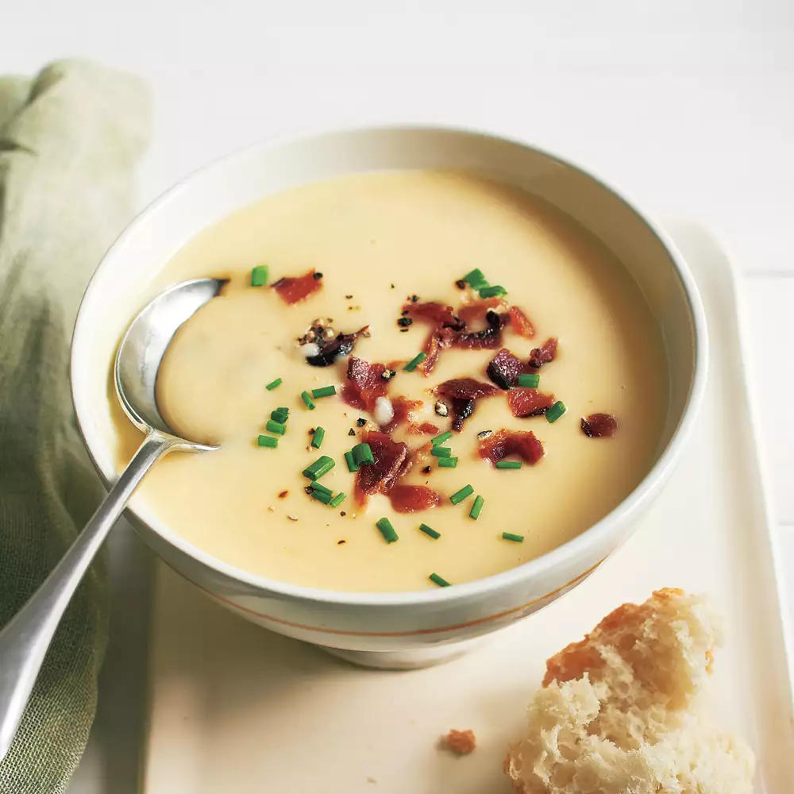

Potato Soup

Soup is a primarily liquid food, generally served warm or hot (but may be cool or cold),
that is made by combining ingredients of meat or vegetables with stock, milk, or water.
Hot soups are additionally characterized by boiling solid ingredients in liquids in a pot until
the flavors are extracted, forming a broth. Soups are similar to stews, and in some cases there
may not be a clear distinction between the two; however, soups generally have more liquid (broth)
than stews.
This Easy Potato Soup recipe is the real deal. Shared with me from the granddaughter of an Idaho
potato farmer, this homemade soup is creamy, thick, and luxurious, even without the optional cheesy
garnish. It is truly the best cream of potato soup I've ever had. And it only takes about 30 minutes
to make!
Ingredients
- 6 strips (uncooked) bacon cut into small pieces
- 3 Tablespoons butter unsalted or salted will work
- 1 medium yellow onion chopped (about 1.5 cup/200g)
- 3 large garlic cloves minced
- 1/3 cup all-purpose flour (42g)
- 2 1/2 lbs gold potatoes peeled and diced into pieces no larger than 1" (this was about 6 Large potatoes for me/1.15kg)
- 4 cups chicken broth (945ml)
- 2 cups milk (475ml)
- 2/3 cup heavy cream (155ml)
- 1 1/2 teaspoon* salt
- w1 teaspoon ground pepper
- 1/4 - 1/2 teaspoon ancho chili powder
- 2/3 cup sour cream (160g)
- Shredded cheddar cheese, chives, and additional sour cream and bacon for topping optional
Step
- Place bacon pieces in a large Dutch Oven or soup pot over medium heat and cook until bacon is crisp and browned.
- Remove bacon pieces and set aside, leaving the fat in the pot.
- Add butter and chopped onion and cook over medium heat until onions are tender (3-5 minutes).
- Add garlic and cook until fragrant (about 30 seconds).
- Sprinkle the flour over the ingredients in the pot and stir until smooth (use whisk if needed).
- Add diced potatoes to the pot along with chicken broth, milk, heavy cream, salt, pepper, and ancho chili powder. Stir well.
- Bring to a boil and cook until potatoes are tender when pierced with a fork (about 10 minutes).
- Reduce heat to simmer and remove approximately half*** of the soup to a blender (be careful, it will be hot!) and puree until smooth (half is about 5 cups of soup, but just eyeballing the amount will be fine. Alternatively you can use an immersion blender.).
- Return the pureed soup to the pot and add sour cream and reserved bacon pieces, stir well.
- Allow soup to simmer for 15 minutes before serving.
- Top with additional sour cream, bacon, cheddar cheese, or chives. Enjoy!